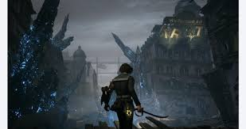
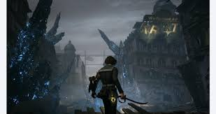

"Fantastic take on the pinnochio story, beautiful world, combat design
is top notch, unique weapons, fun fights and looping level design
struggling from checkpoint to checkpoint, would reccomend"
-Mugiwara
Lies of p
Lies of P is a thrilling soulslike that takes the story of Pinocchio, turns it on its head, and sets it against the darkly elegant backdrop of the Belle Epoque era.
Souls-like
Action
Dark fantasy
Action-RPG
Rating: ⭐⭐⭐⭐
Single player
Story game
Genre: Action RPG
Developer: NEOWIZ
Release date: 18 september 2023